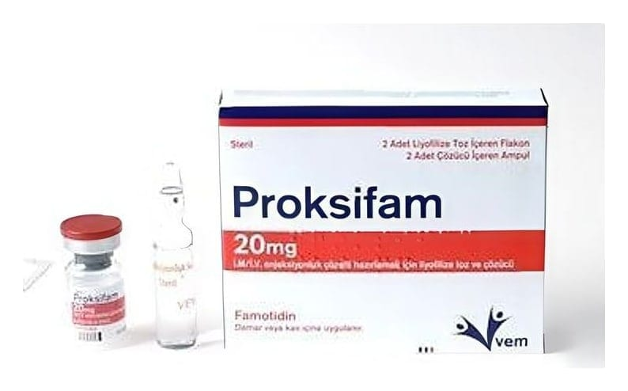

Proksifam 20 mg İM/İV Enjeksiyonluk Çözelti Hazırlamak İçin Liyofilize Toz Ve Çözücü, 2 Adet Flakon + 2 Adet Çözücü Ampul

Ne için kullanılır
KT · Bölüm 1PROKSİFAM, famotidin etkin maddesini içeren ve her birinde 20 mg liyofilize toz bulunduran 2 adet flakon ve beraberinde her bir flakon içeriğini çözmek için enjeksiyonluk su içeren 2 adet ampulden oluşan ambalajlarda kullanıma sunulmaktadır. Famotidin histamin reseptör antagonistleri olarak adlandırılan ilaçlar sınıfına dahildir. Midenin ürettiği asit miktarını azaltarak etki eder. PROKSİFAM; Aspirasyon pnömonisinin (bir akciğer iltihabı) önlenmesinde, Bu belge 5070 sayılı Elektronik İmza Kanunu uyarınca elektronik olarak imzalanmıştır. Doküman https://www.turkiye.gov.tr/saglik-titck-ebys adresinden kontrol edilebilir. Güvenli elektronik imza aslı ile aynıdır. Dokümanın doğrulama kodu : 1S3k0RG83SHY3RG83Z1AxSHY3Z1Ax Bu belge 5070 sayılı Elektronik İmza Kanunu uyarınca elektronik olarak imzalanmıştır. Doküman https://www.turkiye.gov.tr/saglik-titck-ebys adresinden kontrol edilebilir. Güvenli elektronik imza aslı ile aynıdır. Dokümanın doğrulama kodu : 1S3k0RG83SHY3RG83Z1AxSHY3Z1Ax
Midenin çok fazla miktarda asit salgılamasından kaynaklanan durumlarda (Zollinger- Ellison sendromu), vücudun çok fazla kan hücresi (bunlara “mast” hücreler adı verilir) üretmesine neden olan kanserlerin (sistemik mastositozis) ve birkaç iç salgı bezinde aynı anda tümör oluşması durumunda (multipl endokrin adenomalar), Yoğun bakım hastalarında stres yarasının (ülserinin) önlenmesinde, Mide ya da ince bağırsakta görülen yaralar (gastrik ülser, duodenal ülser veya peptik ülser), midenin çok fazla asit ürettiği ve asidin yemek borusuna geçerek yanmaya neden olduğu (gastroözofageal reflü) hastalık için ağızdan tedavi alamayan hastanede yatan hastalarda yatış süresince kullanılır.